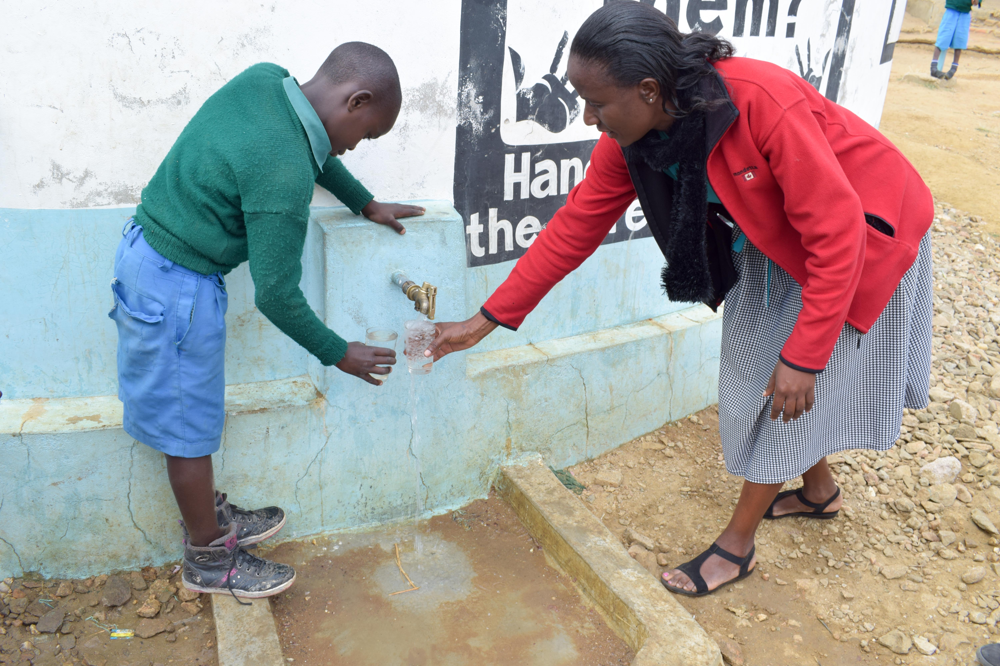
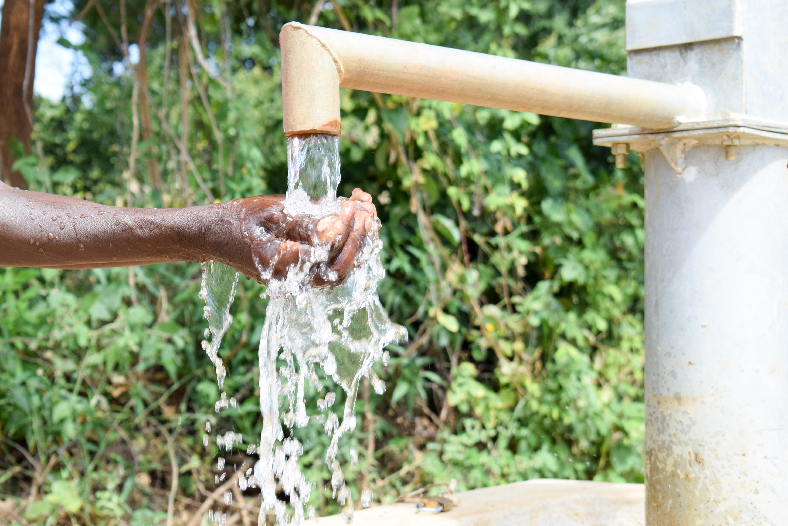
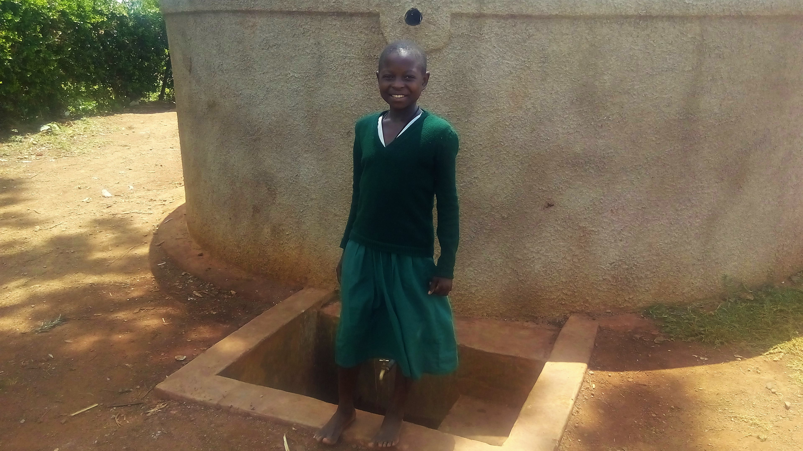

Troubled Water
Clean, accessible water for all is an essential part of the world we want to live in. There is sufficient fresh water on the planet to achieve this. But due to bad economics or poor infrastructure, every year millions of people, most of them children, die from diseases associated with inadequate water supply, sanitation and hygiene. Water scarcity, poor water quality and inadequate sanitation negatively impact food security, livelihood choices and educational opportunities for poor families across the world. Drought afflicts some of the world’s poorest countries, worsening hunger and malnutrition
1.8
billion people globally use a source of drinking water that is fecally contaminated.
2.4
billion people lack access to basic sanitation services, such as toilets or latrines.

Safe water, clean hands, healthy bodies. Time lost to sickness is reduced and people can get back to the work of lifting themselves out of poverty.
The Situation in Africa
Population growth and rural-urban migration
Africa’s rising population is driving demand for water and accelerating the degradation of water resources in many countries on the continent. Among developing regions, Sub-Saharan Africa is estimated to have the highest prevalence of urban slums and it is expected to double to around 400 million by 2020. Despite the efforts of some Sub-Saharan African countries and cities to expand basic services and improve urban housing conditions. Rapid and unplanned urban growth has increased the number of settlements on unstable, flood-prone, and high-risk land where phenomena such as landslides, rains, and earthquakes have devastating consequences.
Economic development and poverty
Sub-Saharan Africa is the world’s poorest and least developed region, with half its population living on less than a dollar a day. About two-thirds of its countries rank among the lowest in the Human Development Index. Even when opportunities exist to address outstanding water issues, deep and widespread poverty across the African region constrains the ability of many cities and communities to provide proper water and sanitation services, sufficient water for economic activities and to prevent water quality from deteriorating.

Access to water leads to food security. With less crop loss, hunger is reduced. Schools can feed students with gardens, reducing costs.
How much water is needed?
Water is essential for life, health and human dignity. In extreme emergency situations, there may not be sufficient water available to meet basic needs and in these cases, supplying a minimum level of safe drinking-water for survival is of critical importance.
People use water for a wide variety of activities. Some of these are more important than others. Having a few litres of water to drink each day, for example, is more important than having water for personal hygiene or laundry, but people will still want and need to wash for the prevention of skin diseases and meeting other physiological needs. Other uses of water have health and other benefits but decrease in urgency.

When students are freed from gathering water, they return to class. With proper and safe latrines, girls stay in school through their teenage years.
UNICEF WASH
UNICEF’s water, sanitation and hygiene (WASH) team works in over 100 countries worldwide to improve water and sanitation services, as well as basic hygiene practices. Over the last 15 years, UNICEF has led a global effort to improve water, sanitation and hygiene conditions for millions of people worldwide. In 2010, a full five years ahead of schedule, the target for water within Millennium Development Goals was met Today, 91% of the world’s population has access to clean drinking water and 68% use improved sanitation (a facility that separates human waste from human contact).
UNICEF WASH Beneficiaries
In 2015, UNICEF helped more than 39 million people secure access to drinking water and more than 18 million people secure access to sanitation (see Table Below). This is an increase of 20 per cent since 2014 and the second highest number of total direct UNICEF beneficiaries in the past 10 years. The greatest increase was in emergency water beneficiaries, due to a growing crisis in and around the Syrian Arab Republic; in response to natural disasters (such as the earthquake in Nepal); and for needs related to ongoing complex emergencies in the Democratic Republic of the Congo, the Sudan and other countries. UNICEF reacts quickly in times of crisis to ensure that affected populations have the knowledge, supplies and facilities for hand washing with soap, which is critical in preventing the spread of disease. These efforts reached more than 14 million people in 2015.
What can we do?
Civil society organizations should work to keep governments accountable, invest in water research and development, and promote the inclusion of women, youth and indigenous communities in water resources governance.
Generating awareness of these roles and turning them into action will lead to win-win results and increased sustainability and integrity for both human and ecological systems.